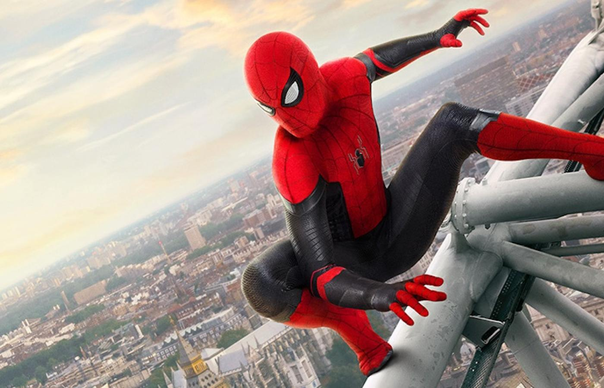

Thomas Stanley Holland (ur. 1 czerwca 1996 w Kingston upon Thames[1]) – brytyjski aktor, odtwórca m.in. roli Spider-Mana. Tom Holland grał rolę Petera Parkera / Spider-Mana w filmach należących do Filmowego Uniwersum Marvela: Kapitan Ameryka: Wojna bohaterów (2016), Spider-Man: Homecoming (2017), Avengers: Wojna bez granic (2018) i ich kontynuacjach.
